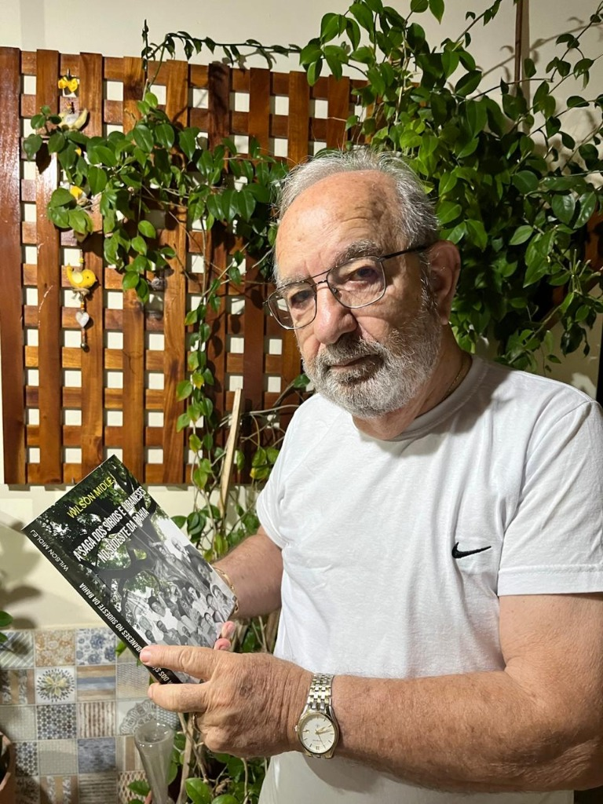
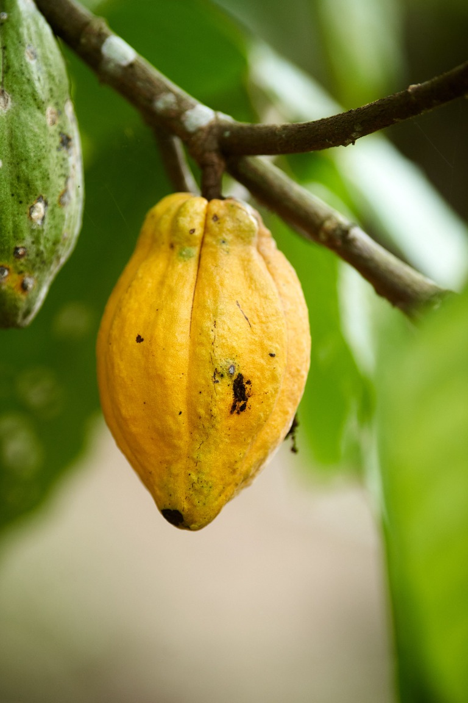
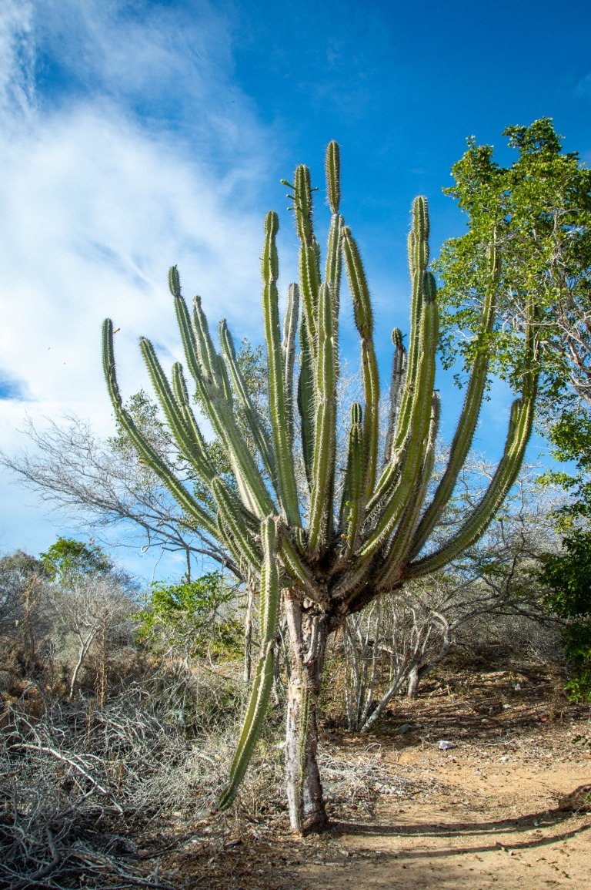

Memória regional
Histórias, lugares e pessoas como ponto de partida para compreender o presente.
SOBRE O PROJETO
Do Cacau ao Mandacaru é uma travessia de cultura, memória e história pelo sul e sudeste da Bahia.
IDEALIZADO POR WILSON MIDLEJ
Do Cacau ao Mandacaru é um site que abriga podcast, blog e conteúdos culturais e históricos, dedicado à valorização da identidade regional, à reflexão e à formação da opinião pública.
O nome desenha uma travessia pelo sul e sudeste da Bahia, aproximando paisagens, experiências e modos de viver. Parte da cultura do cacau e alcança a resistência simbolizada pelo mandacaru, encontrando, nesse percurso, homens e mulheres que forjaram a personalidade da região.
São histórias de pioneiros que plantaram cacauais, desenvolveram a pecuária, o comércio e os serviços, criaram hábitos e linguagem próprios e enriqueceram a culinária com contribuições árabes e italianas. Gente que projetou literatura, destacou-se nos esportes e construiu uma identidade que reúne a vida às margens do Rio de Contas e um pouco da sofisticação grapiúna.
O site abriga podcast e blog, além de registros históricos, textos antigos, poemas, frases, clipes e uma seleção de músicas, incluindo clássicos. Também acolhe opiniões de terceiros, ampliando o espaço para diferentes experiências e perspectivas.
A memória regional oferece um ponto de partida para compreender o presente e discutir o futuro. Com independência editorial, o projeto propõe uma conversa permanente sobre as raízes, as contradições, as possibilidades e os caminhos que sua gente deseja construir.



Histórias, lugares e pessoas como ponto de partida para compreender o presente.
Um espaço para expressão, escuta e valorização das identidades da região.
Uma conversa aberta sobre as raízes, os desafios e as possibilidades da Bahia.